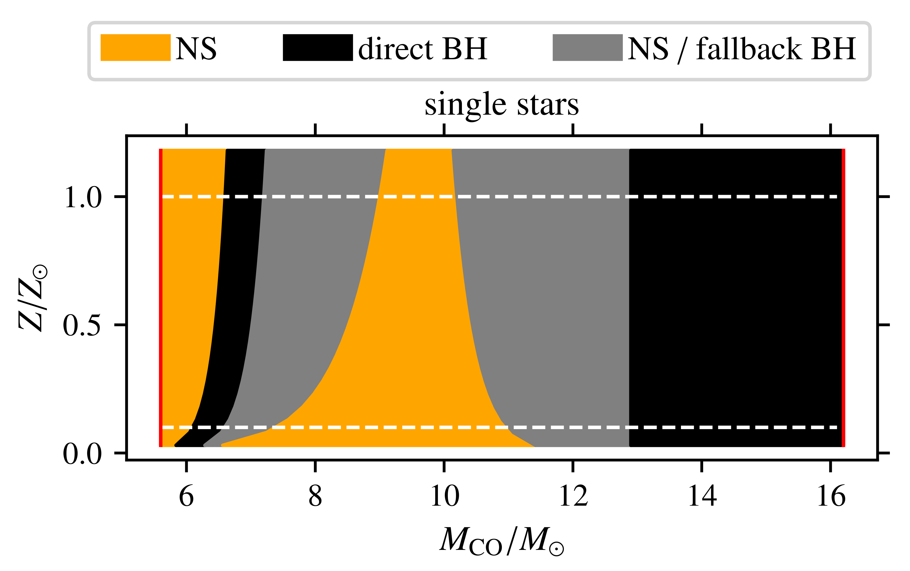
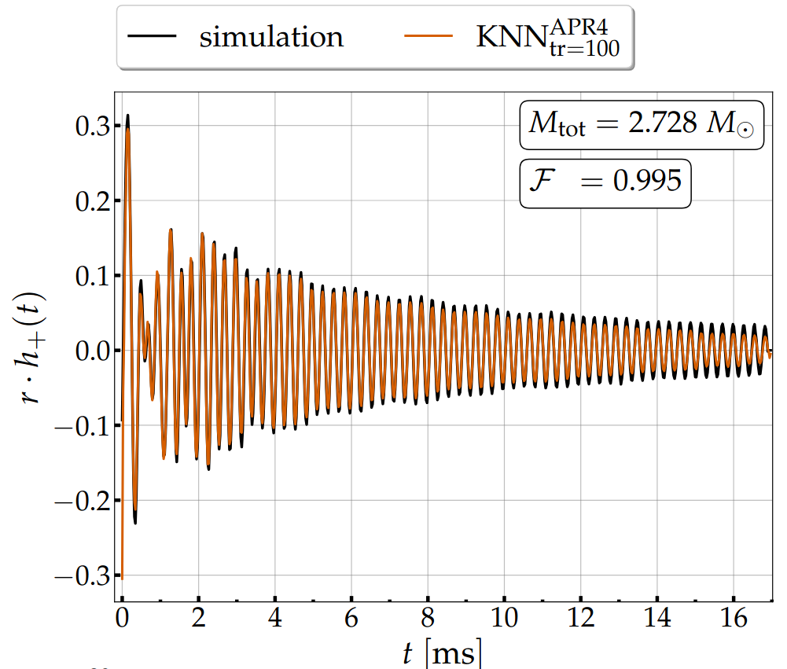
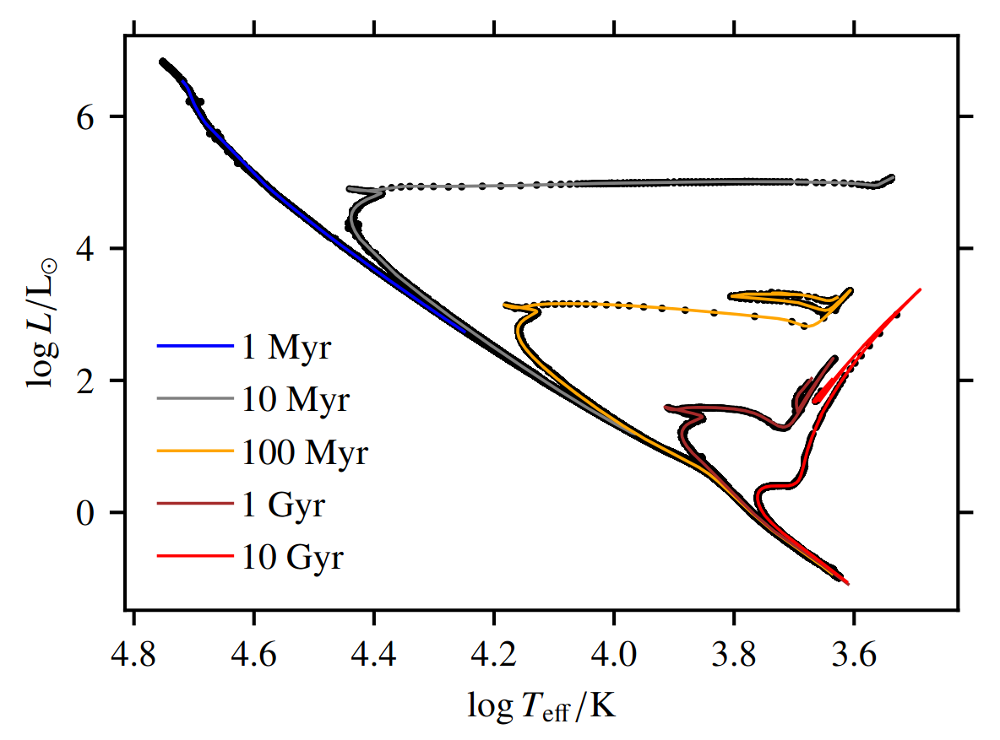

For the complete list of published works, please refer to my ORCID id.
Explodability criteria for the neutrino-driven supernova mechanism,
K. Maltsev, F. R. N. Schneider, I. Mandel, A. Heger, B. Müller, F. K. Röpke and E. Laplace,
to-be-submitted
Gravitational-wave model for neutron star merger remnants with supervised learning,
T. Soultanis, K. Maltsev, A. Bauswein, K. Chatziioannou, F. K. Röpke and N. Stergioulas,
2024, submitted to Phys. Rev. D., arXiv:2405.09513
Scalable stellar evolution forecasting,
K. Maltsev, F. R. N. Schneider, F. K. Röpke, A. I. Jordan, G. A. Qadir, W. E. Kerzendorf, K. Riedmiller and P. van der Smagt,
2024, Astronomy & Astrophysics, 681, A86, doi:10.1051/0004-6361/202347118
Substituting density functional theory in reaction barrier calculations for hydrogen atom transfer in proteins,
K. Riedmiller, P. Reiser, E. Bobkova, K. Maltsev, G. Gryn'ova, P. Friederich and F. Gräter,
2024, Chem. Sci. vol. 15, doi:10.1039/D3SC03922F
Stellar gravitational collapse, singularity formation and theory breakdown,
K. Maltsev, 2023, World Scientific ISBN #9789811269776, doi:10.1142/9789811269776_0298
Thermodynamics of Classical Schwarzschild Black Holes,
K. Maltsev, 2021, Astron. Rep., Vol. 65, Issue 10, p.976-984
doi:10.1134/S1063772921100218
Research
NEUTRON STAR AND BLACK HOLE FORMATION FROM IRON CORE COLLAPSE:
Successful or failed supernova? Neutron star or black hole?
Massive stars undergoing iron core collapse at the end of their evolution either explode and leave a neutron star behind, or explode and leave a black hole
behind, or do not explode and form a black hole quietly. The outcome of 3D core collapse supernova (CCSN) simulations depend on the structure of the stellar
progenitor, on the nuclear equation of state and on the treatment of the complex physical ingredients such as neutrino physics and transport, turbulent convection and other
instabilities. While the latter are inherently multidimensional phenomena, due to computational cost constraints, 3D simulations over a wide parameter space of stellar progenitors
as necessary for population synthesis are prohibitive. In this work, we formulate explodability criteria that allow us to predict the final fates of stars, derived from the outcomes
of a 1D supernova model evaluated over a super-set of stellar models consisting of ∼ 3900 heterogeneous stellar progenitors (single stars, binary-stripped stars and accretor stars).
We use these to derive a CCSN recipe applicable for rapid binary population synthesis.
(Paper to-be-submitted)

Final fate landscape of massive single stars undergoing iron core collapse. Similar landscapes are obtained for massive binary-stripped stars.
Foundational questions related to black hole formation
Does the prediction of gravitational singularity formation in stellar gravitational collapse by General Relativity theory indicate its breakdown? doi:10.1142/9789811269776_0298
Gravitational waves from neutron star merger remnants
We present a time-domain model for the gravitational waves emitted by equal-mass binary neutron star merger remnants i.e., quasi-stable hypermassive
neutron stars, for a fixed equation of state. We construct a large set of numerical relativity simulations for a consistent with current constraints,
totaling 157 equal-mass binary neutron star merger configurations. The gravitational-wave model is constructed using the supervised learning method of K-nearest
neighbor regression. As a first step toward developing a general model with supervised learning methods that accounts for the dependencies on equation of state and
the binary masses of the system, we explore the impact of the size of the dataset on the model. We assess the accuracy of the model for a varied dataset size and
number density in total binary mass. Specifically, we consider five training sets of {20, 40, 60, 80, 100} simulations uniformly distributed in total binary mass.
We evaluate the resulting models in terms of faithfulness using a test set of 30 additional simulations that are not used during training and which are equidistantly
spaced in total binary mass. The models achieve faithfulness with maximum values in the range of 0.980 to 0.995. We assess our models simulating signals observed by the
three-detector network of Advanced LIGO-Virgo. We find that all models with training sets of size equal to or larger than 40 achieve an unbiased measurement of the main gravitational-wave
frequency. We confirm that our results do not depend qualitatively on the choice of the (fixed) equation of state. We conclude that training sets, with a minimum size of 40 simulations,
or a number density of approximately 11 simulations per 0.1 solar mass increment in total binary mass, suffice for the construction of faithful templates for the post-merger signal
for a single equation of state and equal-mass binaries, and lead to mean faithfulness values of approximately 0.95. Our model being based on only one fixed equation of state represents
only a first step towards a method that is fully applicable for gravitational-wave parameter estimation. However, our findings are encouraging since we show that our supervised learning model
built on a set of simulations for a fixed equation of state successfully recovers the main gravitaional-wave features of a simulated signal obtained using another equation of state.
This may indicate that the extension of this model to an arbitrary equation of state may actually be achieved with a manageable set of simulations. arXiv:2405.09513

Prediction of the binary neutron star post-merger gravitational wave emission in time domain.
Estimation of the chirp masses and the rates of observable binary black hole mergers
In-progress work. Details to follow.
EVOLUTION OF MASSIVE STARS:
Efficient stellar evolution forecasting up to the end of core helium burning
Many astrophysical applications require efficient yet reliable forecasts of stellar evolution tracks. One example is population synthesis,
which generates forward predictions of models for comparison with observations. The majority of state-of-the-art rapid population synthesis
methods are based on analytic fitting formulae to stellar evolution tracks that are computationally cheap to sample statistically over a
continuous parameter range. Running detailed stellar evolution codes, such as MESA, over wide and densely sampled parameter grids is prohibitively
expensive computationally, while stellar-age based interpolation in-between sparsely sampled grid points leads to intolerably large systematic
prediction errors. In this work, we provide two solutions of automated interpolation methods that find satisfactory trade-off points between
cost-efficiency and accuracy. We construct a timescale-adapted evolutionary coordinate and use it in a two-step interpolation scheme that traces
the evolution of stars from zero age main sequence all the way to the end of core helium burning while covering a mass range from 0.65 to 300 solar masses.
The feedforward neural network regression model (first solution) that we train to predict stellar surface variables can make millions of predictions,
sufficiently accurate over the entire parameter space, within tens of seconds on a 4-core CPU. The hierarchical nearest neighbor interpolation algorithm
(second solution) that we hard-code to the same end achieves even higher predictive accuracy, the same algorithm remains applicable to all
stellar variables evolved over time, but it is two orders of magnitude slower. Our methodological framework is demonstrated to work on the MESA
Isochrones and Stellar Tracks (Choi et al., 2016) data set, but is independent of the input stellar catalog. Finally, we discuss prospective applications
and provide guidelines how to generalize our methods to higher dimensional parameter spaces. doi:10.1051/0004-6361/202347118

Prediction of isochrones in the Hertzsprung-Russell diagram with
the deep learning based surrogate model of stellar evolution.
Mass dependence of convective core overshooting
In-progress work. Details to follow.
CV
EDUCATION:
PhD candidate in Physics, University of Heidelberg (Germany), 2020 - 2024,
Thesis: "Statistical modeling of the progenitor evolution and formation of neutron stars and stellar-mass black holes" (submitted)
Data science and machine learning internships, 2019 - 2020
Master of Studies in Philosophy of Physics, University of Oxford (UK), 2018 - 2019
Master of Science in Physics, University of Münster (Germany), 2016 - 2018
Applied research internships and social entrepreneurship, 2015 - 2016
Bachelor of Science in Physics, University of Münster, 2011 - 2015
Bachelor of Arts in Physics and Philosophy, University of Münster, 2011 - 2015
AWARDS and FELLOWSHIPS:
Fellow of International Max Planck Research School for Astronomy and Cosmic Physics, University of Heidelberg, 2020 - 2024
Graduate scholarship, German Academic Exchange Service (DAAD), 2018 - 2019
Trainee, European Space Agency (ESA), 2017 - 2018
funded 4-months research stay at the European Space and Astronomy Center (ESAC)
Talent support scholarship, Konrad Adenauer Foundation (KAF), 2013 - 2018
ERASMUS program, 01/2014 - 07/2014
3rd year physics courses at ENS Cachan (today: ENS Paris-Saclay)
3rd year philosophy courses at Université Paris I Panthéon-Sorbonne
Visiting student fellowship, University of Oxford, 10/2013 - 12/2013
TEACHING:
Tutor in Stellar Astrophysics (masters class in Physics), University of Heidelberg, summer term 2023,
Tutor in Analytical Mechanics and Thermodynamics (bachelor class in Physics), University of Heidelberg, summer term 2022
Lecturer on selected topics in Computer Vision, Kulturforum Alte Post, summer term 2020
ACADEMIC SERVICE:
Journal referee for The Astrophysical Journal (ApJ) and Royal Astronomical Society Techniques & Instruments (RASTI)
Co-supervision of Master student Vijayalakshmi V. Nair, Physics of Stellar Objects group, Heidelberg Institute for Theoretical Studies, since 11/2023
Organization of parallel session on Machine Learning for Stellar Astrophysics, XVII Winter Workshop on Stellar Astrophysics, Heidelberg Institute for Theoretical Studies, 18-19/12/2023
Co-organization of workshop on Machine Learning and Bayesian methods to fit stellar atmosphere models of massive stars to observations,
CZS summer school on Scientific Machine Learning in Astrophysics, University of Heidelberg, 14-18/08/2023
Mentor of physics-interested ukrainian refugee high-school student, since 07/2023
OUTREACH:
Organization of half-day workshop "Astrophysics in Heidelberg" for former scholars of the Konrad Adenauer Foundation, Heidelberg Institute for Theoretical Studies, 19/05/2023.
Contribution with two public talks (in german):
Introduction to stellar evolution, and
Threats of Earth habitability from cosmic space versus from anthropogenic climate change
Organization and discussion chairing, Artificial Creativity discussion round, Heidelberg Institute for Theoretical Studies, 19/07/2021
Public speaking:
Introduction to astronomy: cosmic distance scales, Studierendenrat, University of Heidelberg, 15/04/2023
The vacuum in classical vs. in quantum field theory, Ruskin School of Art, University of Oxford, 22/01/2019
Guide at hands-on stations and poster sessions:
Universe on Tour – Lights out! Stars on! roadshow, Federal Ministry of Education and Research (BMBF), Heidelberg, 21/07/2023
Digital Worlds Explore Science festival 2022, Klaus Tschira Foundation, Mannheim (Germany), 25/06/2022
Structure and Symmetry Highlights of Physics festival 2017, BMBF, Münster, 19-23/09/2017
Interdisciplinary art work development with artists, with council funding and gallery hall exhibitions:
WissenschafftKunst, Alte Post, Neuss, 2020 - 2021
Oxford Society for Art and Ecology, Ruskin School of Art, Oxford, 2018 - 2019
Talks
INVITED TALKS:
Progenitor evolution, formation and collapse of neutron stars, Astro AI Lab, Interdisciplinary Center for Scientific Computing, University of Heidelberg, 09/07/2024
Explodability criteria for rapid binary population synthesis, Gravitational Wave Astrophysics group, Institute for Theoretical Astrophysics, University of Heidelberg, 03/05/2024
Stellar evolution emulators, Astrophysics group seminar, School of Physics and Mathematics, University of Surrey (UK), 22/02/2024 (online)
Surrogate modeling applications in stellar astrophysics, Astrophysics research seminar, Los Alamos National Laboratory (USA), 28/09/2023 (online)
Supervised learning for construction of matched-filtering templates of gravitational waves from the binary neutron star post-merger phase, Nuclear Astrophysics and Structure research seminar,
GSI Helmholtz Centre for Heavy Ion Research, Darmstadt (Germany), 12/05/2023
CONTRIBUTED TALKS (selection):
Explodability criteria for rapid binary population synthesis, European Astronomical Society Meeting 2024, Padova (Italy), 01/07/2024
What is the ultimate fate of matter in stellar gravitational collapse?, Foundational Challenges in Cosmological Studies of Black Holes workshop, University of Bonn (Germany), 14/05/2024
Stellar evolution forecasting with a timescale-adapted evolutionary coordinate and machine learning, Spring Meeting 2024 of the German Physical Society (DPG), Berlin, 08/03/2024
Prediction of stellar evolution tracks, gravitational waves and core collapse supernova outcomes with machine learning”, 18th Australian National Institute for Theoretical Astrophysics workshop,
Monash University (Australia), 07/02/2024
Convective core overshooting effects on compact remnant mass and Type II explosion energy landscapes from massive single star evolution, Transients Down Under conference, Swinburne Institute of Technology (Australia), 29/01/2024
Efficient stellar evolution and final fate forecasting over continuous parameter spaces, 17th Stellar Astrophysics winter workshop, Heidelberg Institute for Theoretical Studies, 13/12/2022
Deep learning emulation of the MESA/MIST stellar evolution models, VLT-Flames massive star conference, Heidelberg Institute for Theoretical Studies, 22/06/2022
The Penrose 1965 singularity theorem in historical context of the Black Hole paradigm, 16th Marcel Grossmann Meeting, International Center for Relativistic Astrophysics, Rome (Italy), 8/07/2021 (online)
On continued gravitational contraction (Oppenheimer & Snyder 1939), International Max Planck Research School in Astronomy and Cosmic Physics research seminar, University of Heidelberg, 21/01/2021
On the foundations of Black Hole thermodynamics, 4th International Zel'dovich Meeting, International Center for Relativistic Astrophysics, Minsk (Belarus), 07/09/2020 (online)
Black hole statistical thermodynamics, and quantization of … what?, Classical and Quantum Gravity group seminar, University of Frankfurt (Germany), 12/05/2020
On computational theories of mind, The Ockham Society seminar, University of Oxford, 06/06/2019
Black Hole 'singularity': breakdown of general relativity theory?, Spring Meeting 2019 of the German Physical Society (DPG), Munich, Germany, 18/03/2019
Bayesian parameter estimation on Monte Carlo modelled astrophysical red noise, European Space and Astronomy Center, European Space Agency (ESA), Villanueva de la Cañada (Spain), 06/04/2018
Characterization of power-law noise, Self Organization and Complexity group seminar, University of Münster, 05/02/2018
Interior Schwarzschild solution, stars and astrophysical high energy emission, international summer school Understanding Relativity Theory: Special and General, University of Tübingen (Germany), 02/08/2017